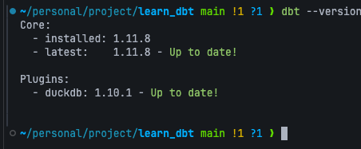
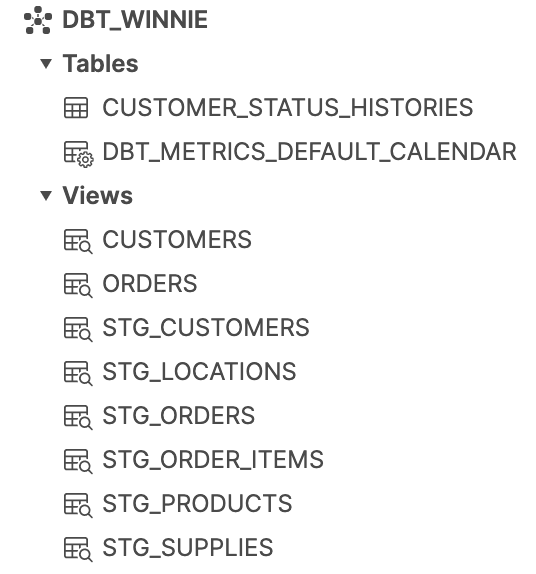

+
Stage 0 was concept-only. From here on, you write real code against a real warehouse. By the end of this stage you’ll have a working dbt project with raw seed data loaded into DuckDB and your first model materialized as a view.
You build it. The repo doesn’t ship a pre-made dbt_project/ — you create it yourself with dbt init, write the profiles.yml, drop in the seed CSVs, and run the first model. That way nothing is magic.
When you ran uv pip install -e . during setup, you installed three things that matter for this stage:
| Package | What it is |
|---|---|
dbt-core |
The dbt CLI itself. Provides the dbt command and the project-parsing engine. |
dbt-duckdb |
The adapter that lets dbt talk to DuckDB. Each warehouse has its own adapter package — dbt-snowflake, dbt-bigquery, etc. You install the one that matches your warehouse. |
duckdb |
The DuckDB engine itself. The adapter depends on it; we also use it directly in the verifier to inspect your warehouse. |
Confirm everything is wired up by running dbt --version (the walkthrough below covers the exact command and expected output). You’re looking for two things in the output: a Core section proving dbt-core is installed, and a duckdb line under Plugins proving the adapter is loaded.

If dbt is not found, your virtualenv is not activated — run source .venv/bin/activate from the repo root and try again.
1
Run dbt init dbt_project
Scaffolds the directory tree above.
↓
2
Write profiles.yml
Tell dbt to use DuckDB at database/dev.duckdb at the repo root.
↓
3
Run scripts/ingest_raw.py
A small Python script stands in for a data-engineering team and lands the three jaffle_shop CSVs as raw tables.
↓
4
Write your first model
stg__customers.sql — a SELECT from {{ ref('raw_customers') }}.
↓
5
Configure dbt_project.yml
Default everything in staging/ to the view materialization.
Everything you build under dbt_project/ is gitignored — the repo only ships the raw CSVs in data/. If you want to start over, run dbt-learn reset; the CLI deletes dbt_project/ and you’re back to a blank slate.
By the end of this stage, your DuckDB warehouse will have three raw tables (loaded by dbt seed) and one view (stg__customers, your first model). In a real warehouse browser the layout looks like this — tables and views side by side under the same schema:

That’s the goal. Five exercises stand between you and it.
dbt: command not found.” — Your venv is not activated. Run source .venv/bin/activate from the repo root.dbt_project.yml with profiles.yml. — dbt_project.yml describes the project (paths, model defaults). profiles.yml describes the connection (which warehouse, which credentials). Project files travel with the repo; profiles can be machine-local. We bundle both inside dbt_project/ for this course because the warehouse is a local file.target/. — Don’t. target/ is regenerated on every dbt run. Your work lives in models/, seeds/, snapshots/, macros/, and tests/.When you’re ready, press n to start the first exercise.
1. Make sure your virtualenv is active. From the repo root:
source .venv/bin/activate
If you skipped the venv during setup, run uv venv && source .venv/bin/activate && uv pip install -e . first.
2. Run:
dbt --version
You should see something like:
Core:
- installed: 1.8.x
- latest: 1.8.x
Plugins:
- duckdb: 1.8.x
The two things to look for:
Core section — proves dbt-core (the CLI) is installed.duckdb line under Plugins — proves the dbt-duckdb adapter is installed and dbt knows how to talk to DuckDB.3. Press v to verify.
dbt --version exits 0duckdb (i.e., the adapter is loaded)| Error | Fix |
|---|---|
dbt: command not found |
Your venv isn’t active. Run source .venv/bin/activate from the repo root. |
Core shows but duckdb is missing under Plugins |
Run uv pip install -e . from the repo root to install all course dependencies. |
dbt-fusion shows instead of dbt-core |
You’re hitting a system-installed dbt-fusion from your PATH instead of the venv binary. Activate the venv. |
Press n — next you’ll actually scaffold the project with dbt init.